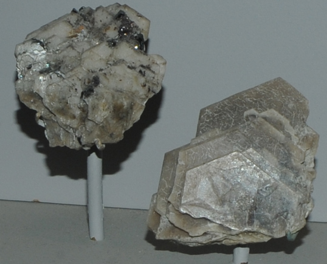

|

| Na2ZrSi3O9.2H2O
These samples of catapleiite are displayed in the Smithsonian Museum of Natural History. Catapleiite is a silicate mineral that contains zirconium with the composition Na2ZrSi3O9.2H2O. The samples are on the order of 5 cm across and are from Mont Saint-Hilaire, Quebec, Canada.
|